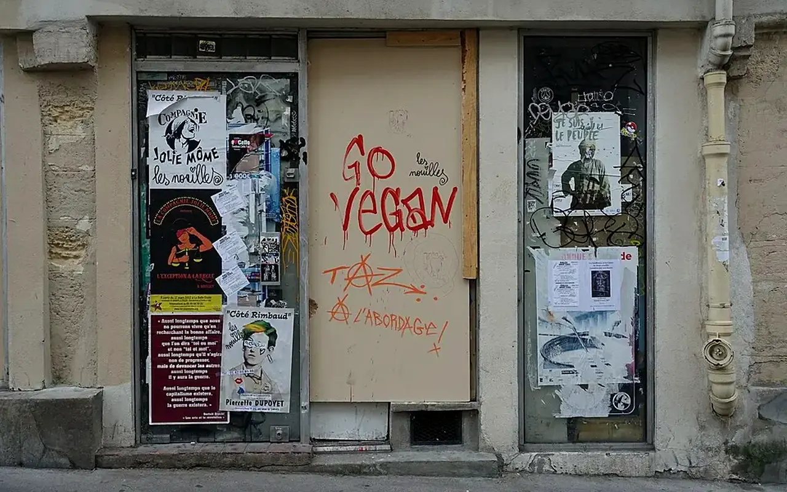
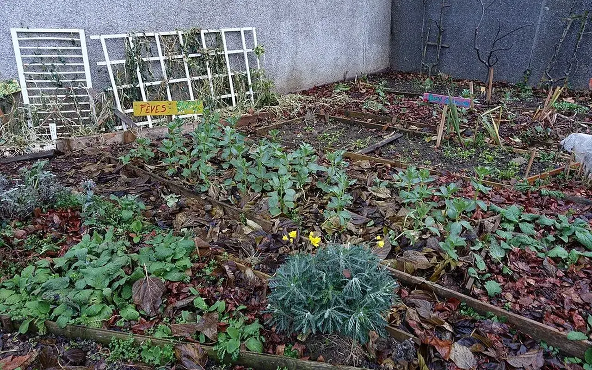
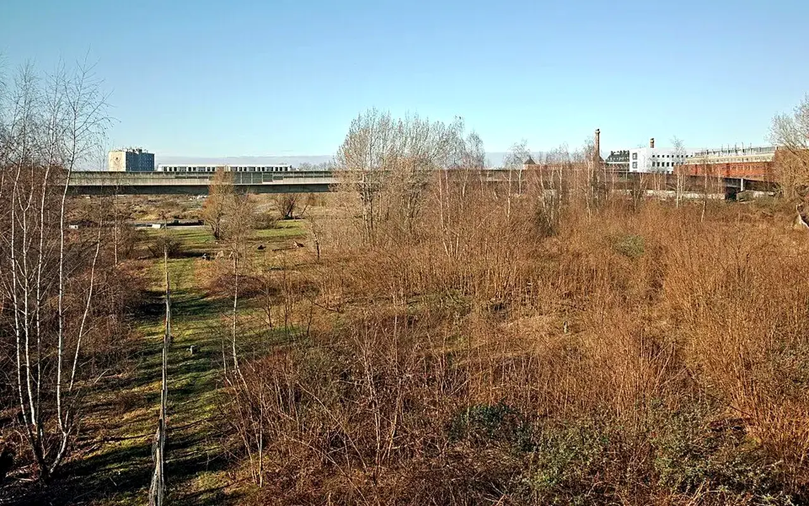
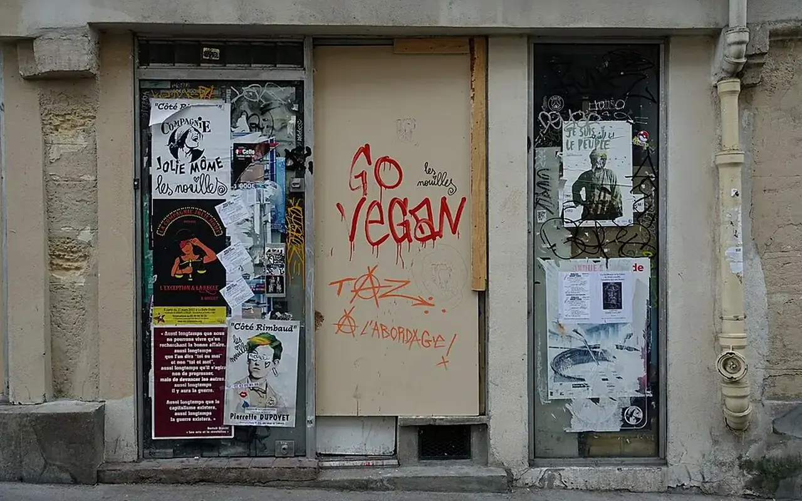
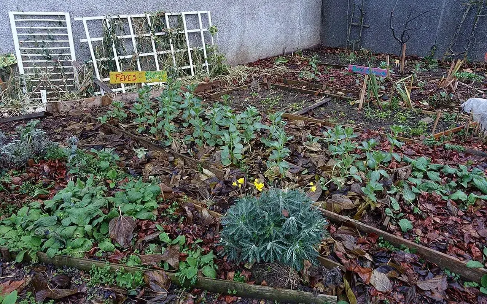
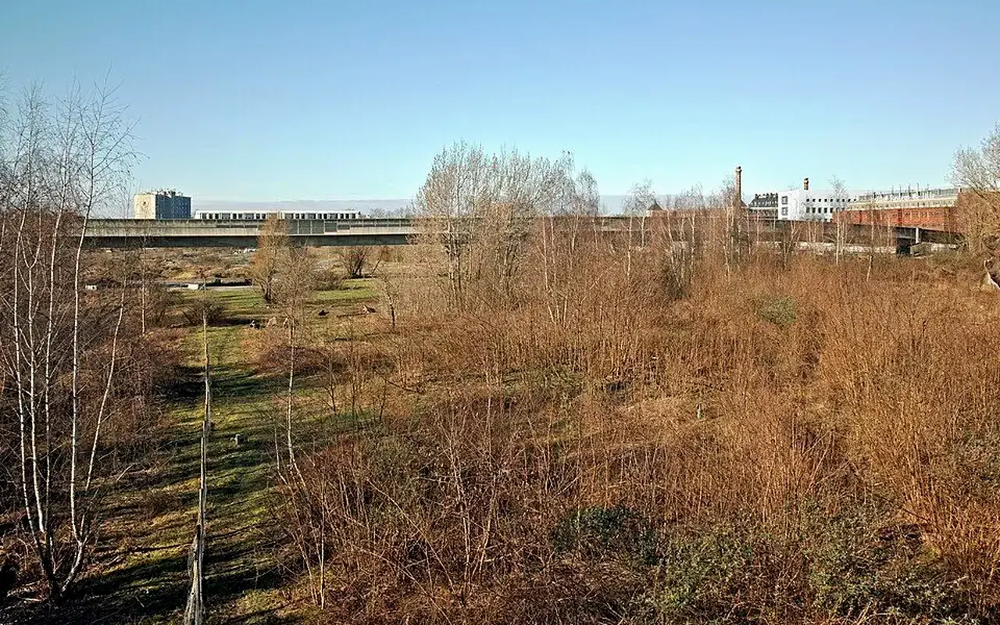

Positionnement
Une association en création, une architecture d'action déjà structurée
TVF ne présente pas de projets réalisés, de partenaires acquis ou de chiffres d'impact propres tant qu'ils ne sont pas vérifiés. La page expose une méthode de travail et des dispositifs à déployer progressivement avec les propriétaires, collectivités, habitants, entreprises, mécènes et associations.
Principe de crédibilité
Chaque action doit partir d'une situation qualifiée : statut du bien, contraintes techniques, besoin local, cadre juridique, financement possible et suivi mesurable.
Chiffres de contexte national
Des enjeux nationaux, à traiter territoire par territoire
Ces chiffres décrivent le contexte fran’ais. Ils ne constituent pas des résultats TVF.
Huit leviers complémentaires
Chaque action répond à un besoin précis, mais aucune ne fonctionne seule
La force du modèle TVF est de croiser patrimoine vacant, réemploi des matériaux, mobilisation citoyenne, ingénierie territoriale et financement responsable.

Habitat vacant
Objectifs
Publics concernés
En savoir plus
Logements vacants
Identifier les logements durablement inoccupés, comprendre les blocages et structurer des solutions de remise en usage avec les propriétaires, les collectivités et les acteurs locaux.
- Repérer les biens
- Qualifier les causes de vacance
- Orienter vers une solution réaliste
Propriétaires, communes, habitants, acteurs de l'habitat

Usage partagé
Objectifs
Publics concernés
En savoir plus
Bien Solidaire à Usage Partagé
Permettre à un propriétaire de conserver son bien tout en étudiant une rénovation encadrée par une convention d'usage temporaire, proportionn’e à l'investissement mobilisé.
- Étudier le bien
- Définir un usage utile
- Construire une convention claire
Propriétaires, associations, collectivités, financeurs
Ressources
Objectifs
Publics concernés
En savoir plus
Matériaux de réemploi
Transformer des matériaux disponibles localement en ressources qualifiées pour des projets validés : rénovation, aménagement, locaux associatifs ou chantiers solidaires.
- Collecter
- Trier
- Affecter aux projets validés
Entreprises, particuliers, collectivités, associations

Centralités
Objectifs
Publics concernés
En savoir plus
Commerces inoccupés
Qualifier les cellules commerciales vacantes et structurer des usages capables de recréer de l'activité : commerce de proximité, atelier, association, tiers-lieu ou boutique temporaire.
- Repérer les vitrines fermées
- Évaluer le potentiel
- Tester des usages de proximité
Communes, propriétaires, commerçants, entrepreneurs locaux

Foncier sobre
Objectifs
Publics concernés
En savoir plus
Friches et espaces abandonnés
Révéler le potentiel des friches, terrains et espaces délaissés en privilégiant des usages sobres, progressifs et utiles : nature en ville, pédagogie, culture, rencontre ou production locale.
- Observer l'État du site
- Identifier les contraintes
- Imaginer des usages temporaires ou durables
Collectivités, habitants, associations, aménageurs

Engagement
Objectifs
Publics concernés
En savoir plus
Solidarité & Insertion
Relier les projets de revitalisation à des parcours d'engagement, de formation et d'insertion, avec une attention aux personnes éloign’es de l'emploi et aux habitants volontaires.
- Accueillir les bénévoles
- Construire des missions utiles
- Valoriser les compétences
Bénévoles, jeunes, structures sociales, acteurs de l'emploi
Maillage national
Objectifs
Publics concernés
En savoir plus
Antennes locales
Structurer un réseau d'équipes locales capables d'observer leur territoire, d'animer les coopérations et de faire remonter les besoins dans un cadre national partagé.
- Former des référents
- Mutualiser les outils
- Animer les territoires
Habitants, élus, associations, référents locaux
Financement
Objectifs
Publics concernés
En savoir plus
Financer les projets
Structurer les dossiers afin de mobiliser, uniquement lorsqu'ils sont confirmés, dons citoyens, mécénat, contributions d'entreprises, subventions et financements solidaires.
- Qualifier les besoins
- Structurer le budget
- Publier des informations vérifiées
Mécènes, fondations, entreprises, citoyens, collectivités
Processus d'intervention
Passer d'une situation abandonnée à un projet utile
Signalement ou repérage
Un lieu, un bien ou une ressource est identifié par un habitant, une collectivité, un propriétaire ou l'observatoire.
Diagnostic
TVF vérifie le statut, les contraintes, les risques, la disponibilité, les besoins locaux et les conditions de publication.
Scénario d'usage
Plusieurs usages sont étudiés : logement, commerce, local associatif, jardin, atelier, formation ou occupation temporaire.
Coopération
Les rôles sont formalisés : propriétaire, collectivité, bénévoles, entreprises, financeurs et bén’ficiaires.
Mise en œuvre
Le projet peut mobiliser travaux, matériaux de réemploi, chantier solidaire, financement ou animation locale.
Suivi
Les résultats sont publiés seulement lorsqu'ils sont réels, datés, vérifiés et rattachés au bon territoire.
Déploiement national
Une carte préparée pour les planifiés territoires TVF
La carte illustre l'architecture cible : un premier territoire pilote à Saint-Étienne, puis des territoires à qualifier en métropole et en Outre-mer. Aucun point ne vaut antenne active tant qu'il n'est pas officiellement constitué.
Voir la carte des territoires
Saint-Étienne : territoire pilote
Territoires à qualifier
Outre-mer : développement planifié
Scénarios pédagogiques
Exemples de situations possibles, non présentés comme des projets réalisés
Un logement vacant en centre-bourg
Le propriétaire ne sait pas comment financer les travaux. TVF peut Étudier un diagnostic, des matériaux de réemploi, une convention d'usage et un usage social temporaire.
Une vitrine commerciale fermée
La commune souhaite éviter une rue inactive. TVF peut aider à qualifier le local, chercher un usage transitoire et structurer une mise en relation avec des porteurs d'activité.
Un stock de matériaux inutilisés
Une entreprise dispose de surplus. TVF ne distribue pas librement : les ressources sont vérifiées, tracées puis affectées à un projet validé.
FAQ
Questions fréquentes
TVF intervient-elle déjà partout en France ?
Non. Territoires Vivants France est dans son déploiement national. L'ambition nationale est présentée, mais les antennes et projets seront publiés uniquement lorsqu'ils seront constitués et vérifiables.
Peut-on proposer un logement, un commerce ou un terrain ?
Oui. Une proposition peut être transmise pour qualification. Le bien n'est jamais publié comme projet TVF tant que le statut, l'accord du propriétaire, les risques et les conditions d'usage ne sont pas vérifiés.
La Banque de Matériaux distribue-t-elle gratuitement les ressources ?
Non. Les matériaux sont intégrés à une stratégie de valorisation territoriale. TVF décide de leur affectation vers des projets validés, dans un cadre de coopération clair.
Comment les résultats seront-ils mesurés ?
Les indicateurs TVF seront publiés après collecte réelle : signalements qualifiés, biens accompagnés, matériaux orientés, bénévoles mobilisés, projets validés et territoires couverts.
Agir avec méthode
Vous avez un lieu, une ressource ou une compétence à proposer ?
TVF peut qualifier la situation, orienter vers le bon dispositif et structurer une coopération adaptée au territoire.
Rejoindre TVF
Passer de l'action au bon interlocuteur
Chaque action renvoie vers un parcours clair : signalement, matériaux, partenariat, financement ou mobilisation locale.
CollectivitéDevenir territoire partenaireDiagnostic, données, coopération, indicateurs.
PropriétaireProposer un bienLogement, commerce, bâtiment ou terrain à qualifier.
EntrepriseContribuer à l'économie circulaireMatériaux, compétences, locaux, mécénat.
AssociationConstruire une action localeBesoins, publics, bénévolat, animation.
CitoyenSignaler une ressourceLieu vacant, matériau disponible, besoin local.
InvestisseurFinancer un impact vérifiableProjet qualifié, budget, reporting, transparence.
BénévoleRejoindre le mouvementMissions, chantiers, documentation, terrain.
études de cas types
Trois scénarios réalistes pour comprendre la méthode TVF
Ces exemples sont des scénarios pédagogiques, pas des projets réalisés. Ils montrent comment un besoin local pourrait être transform² en dossier qualifié, conventionn’ et mesurable.
Commerce ferm² en rez-de-chauss’e
Avant : vitrine fermée, propriétaire isol’, incertitude sur les travaux et absence de porteur d'activité.
Aprés visé : boutique test, atelier d'artisan, local associatif ou service de proximité, avec convention d'usage et indicateurs de fréquentation.
- Acteurs : commune, propriétaire, porteur d'activité, artisans.
- Preuves : État initial, budget, autorisations, usage, durée, suivi.
Logement vacant ancien
Avant : logement non occupé, travaux coûteux, propriétaire sans solution opérationnelle.
Aprés visé : logement temporaire, intergén’rationnel, étudiant ou associatif, si les diagnostics et la convention le permettent.
- Acteurs : propriétaire, collectivité, financeurs, artisans.
- Preuves : diagnostics, devis, financement, convention, remise en usage.
Friche ou terrain délaiss’
Avant : espace peu utilisé, image dégradée, usages informels, absence de projet partagé.
Aprés visé : jardin partagé, espace pédagogique, lieu culturel temporaire ou réserve de biodiversité selon les contraintes.
- Acteurs : collectivité, habitants, associations, techniciens.
- Preuves : maîtrise foncière, sécurité, entretien, impact social et environnemental.
Les actions TVF, leurs publics et leurs livrables
| Action | Public prioritaire | Livrable attendu | Passage à l'action |
|---|---|---|---|
| Logements vacants | Propriétaires, communes, habitants | Fiche bien, diagnostic, scénario d'usage | Voir l'action |
| Commerces inoccupés | Collectivités, propriétaires, porteurs locaux | Fiche local, usage possible, contraintes | Voir l'action |
| Matériaux de réemploi | Entreprises, collectivités, particuliers | Fiche ressource, état, quantité, affectation | Voir l'action |
| Espaces abandonnés | Collectivités, associations, habitants | Fiche site, risques, propriété, usage compatible | Voir l'action |
| Solidarité & insertion | Bénévoles, associations, structures d'insertion | Mission, encadrement, assurance, suivi | Voir l'action |
Stratégie nationale
Du constat à l'action : Nos actions pour redonner vie aux territoires
Cette page situe le sujet dans une trajectoire de deploiement progressif, documente et duplicable.
Problème
Les besoins sont nationaux, mais les solutions doivent etre construites territoire par territoire.
Donnée utile
Repere public : les politiques de revitalisation, sobriete fonciere et transition écologique exigent des preuves locales.
Solution TVF
TVF assemble une méthode duplicable : diagnostic, acteurs, convention, ressources, financement et impact.
Méthode
Le deploiement part de Saint-Étienne, puis s'élargit uniquement avec des relais, données et capacités confirmees.
Acteurs
Collectivités, État, entreprises, associations, propriétaires, financeurs, benevoles et habitants.
Impact visé
Construire une plateforme utile, lisible et mesurable pour plusieurs territoires sans annoncer de résultats fictifs.
Passer à l’action
Choisir le parcours adapté à votre rôle
Chaque demande doit être orientée vers un cadre clair : besoin territorial, propriétaire, ressource, financement, bénévolat ou coopération institutionnelle.